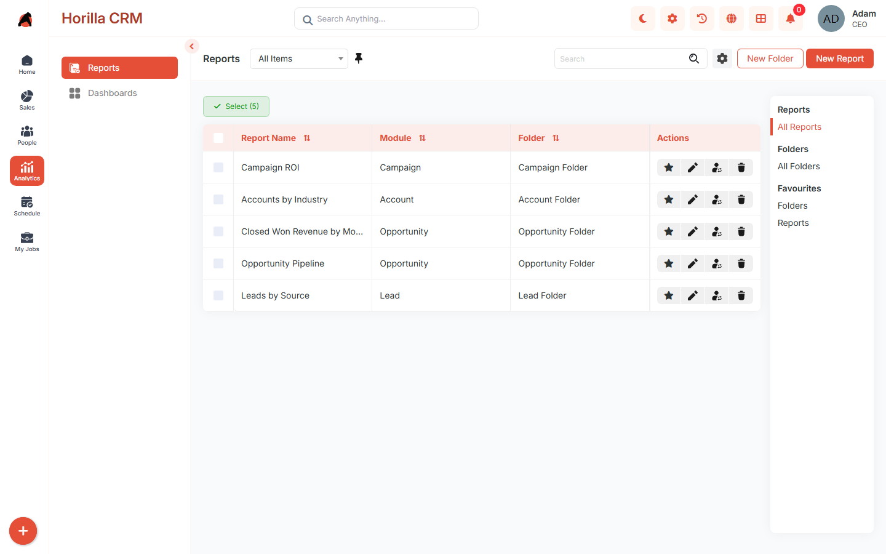
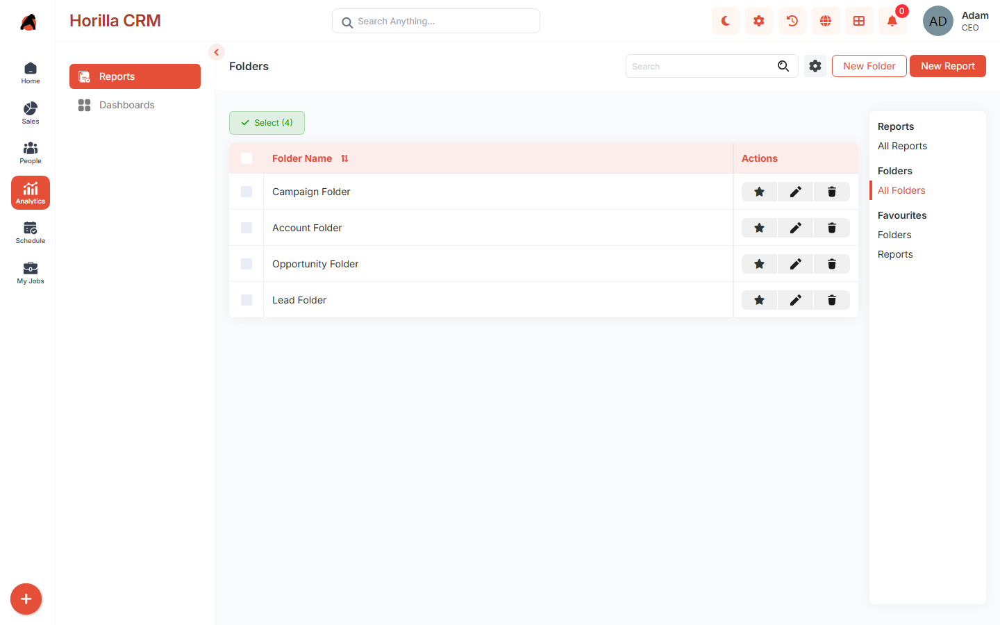
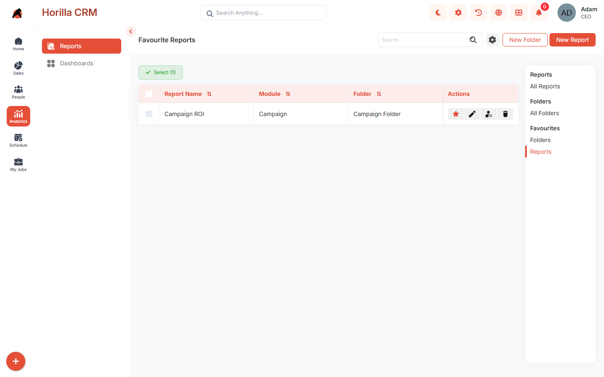
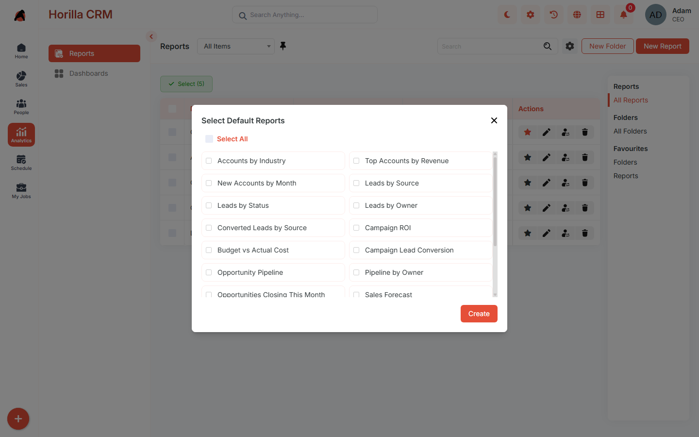
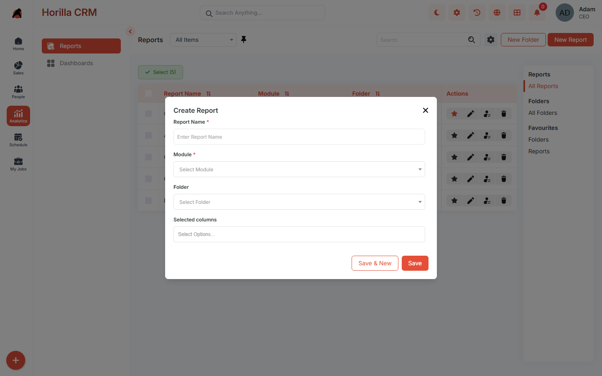
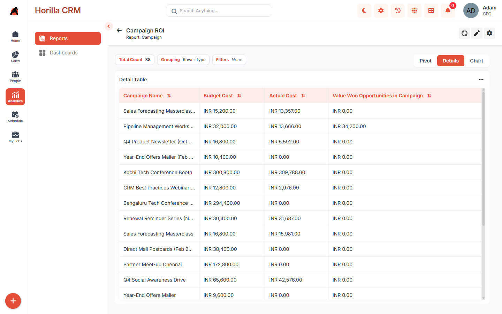
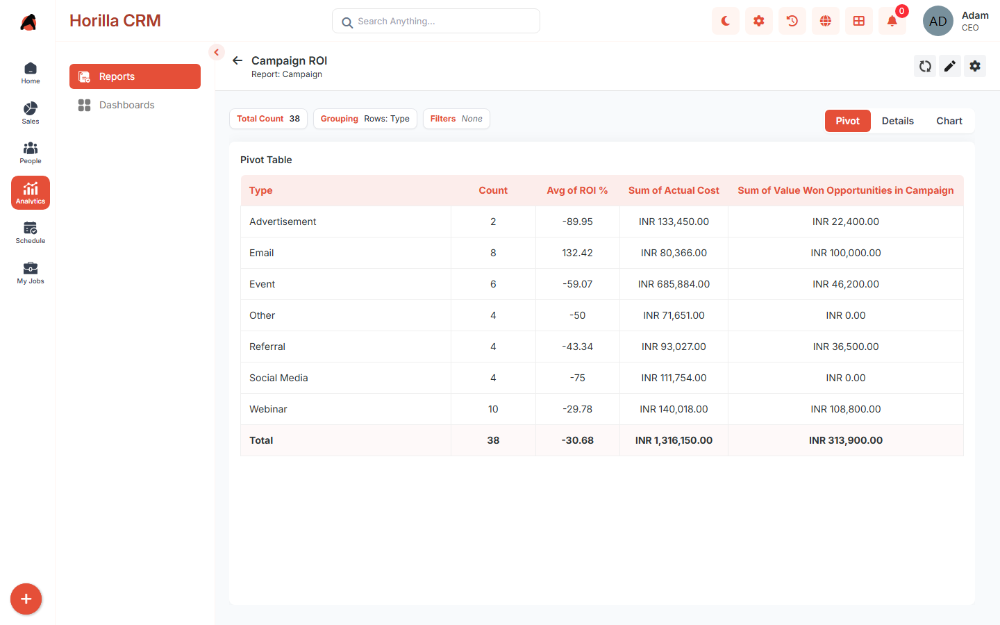
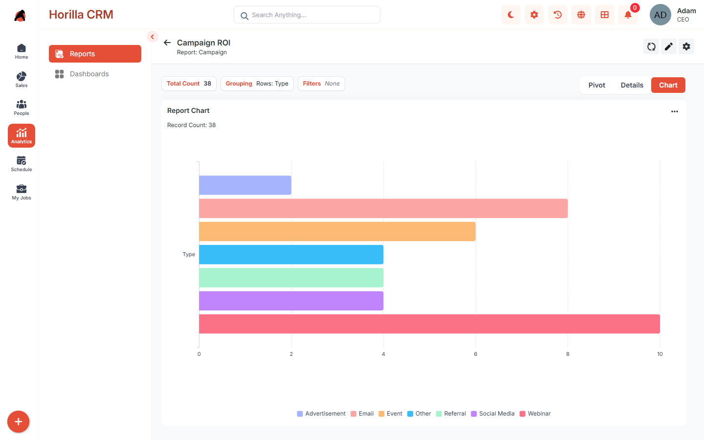
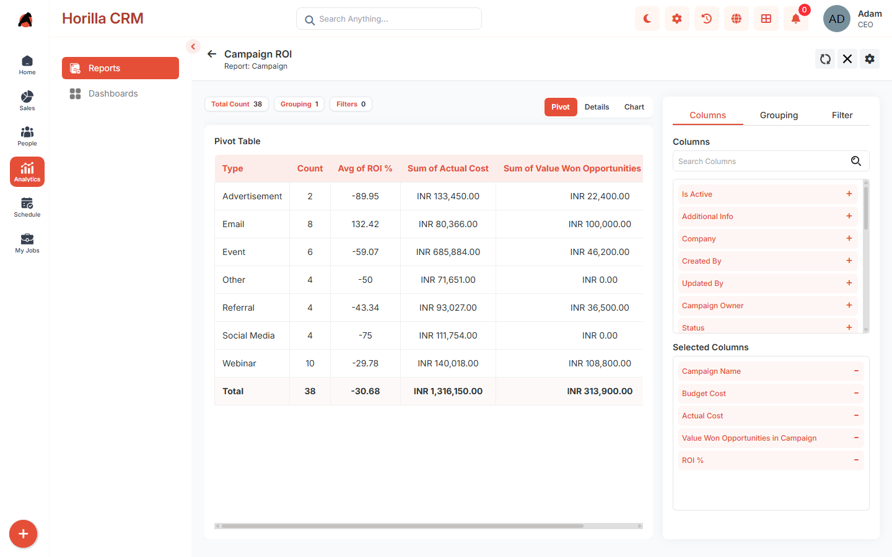
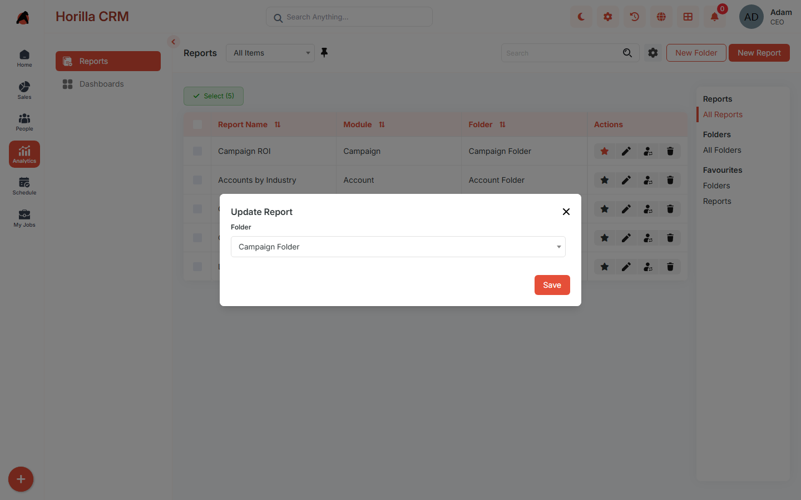

Introduction
The Reports module is used to generate, organise and analyse data from across the CRM. Reports combine pivot tables and charts with configurable columns, filters, grouping and aggregate functions.
Key Features and Functionalities
1. Report List View
Purpose: view, manage and organise every report across the CRM modules.
- All reports appear together in a consolidated list.
- Mark reports as Favorites for quick access.
- Delete reports that are no longer needed.

2. Folder Organization
Purpose: give reports a structured arrangement so they are easy to find.
- Create several folders to group related reports, for example Leads Reports or Opportunity Reports.
- Rename folders, or delete them when they are no longer needed.
- Move folders into other parent folders to build a deeper structure.
- Mark folders as Favorites for quick access from the sidebar.

3. Favorites Management
Purpose: reach frequently used reports and folders quickly.
- Mark any report or folder as a favourite with the star icon.
- Favourited items are collected in the Favorites section of the sidebar.

4. Default Reports
Purpose: load the pre-built reports supplied by the installed CRM modules.
- Click Load Default Reports to open a modal listing the default reports available across the installed modules.
- Select the reports you want and click Create to generate them.
Default reports arrive pre-configured with the relevant columns, groupings and filters.

5. Creating a Report
Purpose: build new custom reports from any CRM module.
- Click the New Report button.
- Fill in Name, Module, Folder and Columns.
- Save the report.

6. Report Detail View
Purpose: provide detailed insight and interactive exploration of the data.
Detail Table
- Shows record-level data using the selected columns.
- Each column supports aggregate functions: Sum, Count, Average, Min and Max.

Pivot Table
- Summarises the data by grouping rows and columns and showing aggregated values.
- Clicking a pivot value filters the detail table down to the related records.

Report Chart
- Visualises the data as a Pie, Bar, Line or other chart type.
- The chart type and the axis field are configurable from the detail view.
- The chart updates dynamically as filters and groupings change.
- An interactive legend breaks the data down by category.
- The total record count is displayed.
- The chart can be exported as PNG or PDF.

7. Report Edit View
Purpose: change a report's configuration after it has been created.

The edit view is split into three tabs:
- Columns
- Add, remove or reorder the detail table columns, and switch the aggregate function on or off for each column.
- Grouping
- Add or remove the pivot row and column grouping fields, up to a maximum of three.
- Filter
- Define conditions from a field, an operator and a value, combined with AND/OR logic.
Changes can then be saved or discarded.
8. Report Actions & Export
Purpose: share and manage reports outside the CRM.

- Delete
- Remove outdated or unnecessary reports.
- Favorite
- Mark important reports so they are reachable quickly from the sidebar.
- Move Report
- Transfer a report to a different folder.
- Move Folder
- Transfer a folder to a different parent folder.
- Edit Report Name
- Rename a report.
Although this section is titled "Report Actions & Export", the source page lists no export action here. The only export described is the chart export to PNG or PDF, under Report Chart.